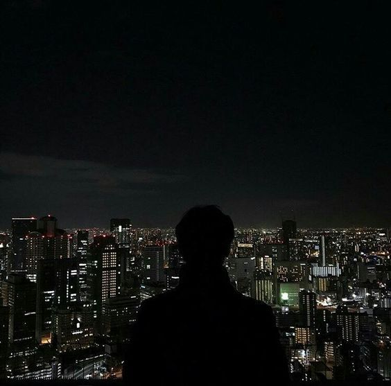

La vereda tibia, un bar que abre hasta tarde, el murmullo de un subte que ya no corre. Cada esquina arma su propia coreografía y el cuerpo aprende a leerla.
Ritmos que organizan la noche
Hay carteles que titilan, un pasillo que lleva a un sótano mal iluminado, una terraza que mira al río. Ahí aparecen las historias que importan, las voces que no siempre entran en la grilla, los cuerpos que inventan nuevas maneras de estar juntos.
En cada barrio, la ciudad se vuelve un escenario: un vendedor que canta, la pareja que baila en la vereda, el murmullo compartido de quienes esperan. Esa coreografía cotidiana, a veces invisible, es el tejido que sostiene nuestra idea de comunidad.
“Lo importante es no perder el pulso: a cierta hora, la ciudad respira a nuestro ritmo.”

Pequeños rituales
Los mapas cambian de noche. Zonas que de día son tránsito se transforman en pequeños rituales de encuentro. Un kiosco abierto hasta tarde, una ventana con música baja, la luz roja de un estudio fotográfico. Todo es señal. Todo convoca.